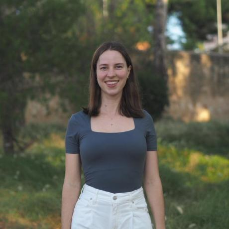

Compound Events and Multi-Hazard Analytics
EGU26 Short Course SC2.1
🗓️ May 06, 2026
⏰ 08:30 – 10:15 (CEST)
🏨 Room -2.82, Austria Center Vienna
📦 All materials: https://egu26-compound-events-sc.github.io/
💻 EGU website: https://www.egu26.eu/session/56950
Description
Compounding hazards can lead to interconnected or aggravated impacts. In recent years, the analysis of compound events has become essential to understand and to improve our response to such high-impact multi-hazard disasters.
Compound events involve two events happening either simultaneously or sequentially. These events can be independent of each other (in which the outcome of one event has no effect on the probability of the other), or they can be dependent (in which the outcome of one event affects the probability of another). In the context of weather, climate or hydrology, compound events refer to combinations of multiple drivers or hazards which can lead to large impacts and disasters. These compound weather, climate or hydrological events can be related to extreme conditions themselves (e.g. storms, heatwaves, floods and droughts), or to combinations of events that are themselves not extremes but lead to an extreme event or significant impact when combined. This EGU short course offers conceptual background and hands-on experience with state-of-the-art methods to study compound events. The session start with two introductory talks: we will give an overview of the typology of compound events and of the methodologies used to study these events. Furthermore, we discuss the evolution of the multi-risk field, including vulnerability dynamics, policy frameworks, and adaptation challenges. These introductory talks are then followed by two applied sessions that provide hands-on training: we will discuss an application of vine copulas for multivariate dependence analysis, and the application of large language models for structured impact extraction from news media.
All course material and instructions to run the applications are and will remain available online on this website.
Short course attendees are welcome to attend the annual multi-risk dinner on Tuesday May 5th - 19:00h at Gleis//Garten (Eichenstraße 2, 1120 Wien, Austria) by signing up here: https://forms.gle/ezx1tNudoJTeXmBs9
Schedule
| Time (CEST) | Session | Speaker |
|---|---|---|
| 08:30 – 08:35 | Welcome and overview | Conveners |
| 08:35 – 08:50 | Introduction I: Overview of compound events | Chris White |
| 08:50 – 09:05 | Introduction II: From single-hazard to multi-risk | Marleen de Ruiter |
| 09:05 – 09:40 | Application I: Vine copulas for multivariate dependence | Judith Claassen |
| 09:40 – 10:15 | Application II: LLM impact extraction from news media | Taís M. Nunes Carvalho |
Speakers
Chris White | University of Strathclyde
Professor Chris White is Head of the Centre for Water, Environment, Sustainability and Public Health at the University of Strathclyde in Glasgow. His research quantifies and predicts complex cascading and interconnected multi-hazard risks across systems and critical infrastructure. He leads several projects and activities including the new ANTICIPATE European COST Action network CA24144 on extended-range multi-hazard predictions and early warnings (2025-29). He leads multi-hazard interactions and cascading impacts work package of the MEDiate (Multi-hazard and risk-informed system for enhanced local and regional disaster risk management) project (2022-25) and is a partner in the forthcoming TOGETHER (Towards enhanced coordination of disaster risk management and governance through a holistic framework for multi-level interaction and communication) project (2025-28), both funded by the Horizon Europe programme of the European Commission. He was also previously co-lead of the applications sub-project of the World Meteorological Organization’s WWRP/WCRP S2S Prediction Project application sub-group.
Personal website: https://www.strath.ac.uk/staff/whitechristopherdr/
Marleen de Ruiter | Vrije Universiteit Amsterdam
Marleen de Ruiter is an Assistant Professor in the Department of Water and Climate Risk at the Institute for Environmental Studies (IVM), Vrije Universiteit Amsterdam. Her research focuses on multi-hazard risk modelling, early warning systems, and the temporal dynamics of disaster vulnerability. She is an expert on consecutive disasters and systemic risk, currently serving as the co-chair of the RiskKAN network and co-leading the Amsterdam Sustainability Institute (ASI) cluster on Natural Hazards & Society. In 2024, she was honored with the EGU Natural Hazards Division Outstanding Early Career Scientist award.
Personal website: https://vu.nl/en/research/scientists/marleen-de-ruiter

Judith Claassen | Vrije Universiteit Amsterdam
Judith Claassen is a researcher at the Institute for Environmental Studies (IVM) at Vrije Universiteit Amsterdam. She earned her bachelor degree in Earth and Environmental Sciences at the Amsterdam University College, and holds a master in Civil Engineering: Water Management from TU Delft. Her research focuses on modelling multi-hazard events using probabilistic methods, such as vine copulas. Her PhD was funded by the Horizon 2020 MYRIAD-EU project, where she also served as the first chair of the Early Career Researcher board.
Personal website: https://research.vu.nl/en/persons/judith-claassen/
Taís M. Nunes Carvalho | Helmholtz Centre for Environmental Research
Placeholder:Taís M. Nunes Carvalho is … I am a researcher in the Helmholtz Center for Environmental Research. My research integrates data science methods, including machine learning, optimization, and text mining, to support water resources planning and management. My current work is focused on identifying the cascading impacts of natural hazards using text data.
Personal website: https://taiscarvalho.com/
Conveners
- Guilherme Mendoza Guimarães
- Joren Janzing
- Leonore Boelée
- Ilias Pechlivanidis
- Maria-Helena Ramos
Co-organized by: AS6 · CL6 · HS11 · NH14